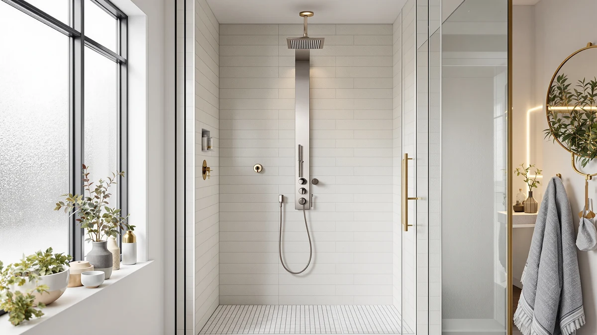

Best Brushed Nickel Shower Panels of 2026: 7 Top-Rated Towers
Prices and picks verified as of September 2026. Independent, reader-supported reviews.


Quick Answer
After comparing seven brushed nickel shower panel towers on price, named features and brand lineup, the FUZ Contemporary Shower Panel Tower is our pick for most bathrooms. It pairs a clean brushed nickel finish with a $169.00 price that sits well below four of the six alternatives on this list, without giving up the wall-mounted, multi-function format that makes a shower panel worth buying over a standard head.
Our pick: FUZ Contemporary Shower Panel Tower — $169.00 Check Price on Amazon
Bottom line: our top pick is the FUZ Contemporary Shower Panel Tower System Stainless Steel at $174. The best budget option is the AlenArt Shower Panel LED Shower Tower System with Rainfall at $123.05.
Things to Know Before You Buy
- Water pressure matters more than the finish. A brushed nickel shower panel with a rainfall head and body jets needs real pressure behind it, generally at least 40 PSI, or the multi-function spray feels weak no matter how good the hardware looks.
- Brushed nickel hides water spots better than chrome. The matte texture scatters light instead of reflecting it, so mineral deposits and fingerprints show up less between cleanings, though the panel still needs a wipe-down after use.
- Most towers connect to standard US plumbing. The panels on this list use a typical 1/2 inch NPT hookup that fits existing hot and cold supply lines, but the unit itself is heavy, so plan for a secure wall anchor.
- LED lighting adds convenience, not durability. Two of our picks include LED-lit shower heads. It is a useful extra for checking water temperature at a glance, but it is not a reason to pick one panel over another on build quality alone.
- Price and feature count do not always move together. The cheapest panel here, at $124.08, sits close in named features to towers costing $100 more, so it pays to compare what each listing states rather than assuming price signals quality.
The best brushed nickel shower panels give a plain shower stall the warm, low-glare finish of a renovated bathroom without the cost of retiling, pairing a rainfall or multi-jet head with brushed nickel trim that hides water spots better than polished chrome.
We compared seven all-in-one shower panel towers built around that nickel-tone finish, weighing price against named features, LED lighting, and how consistently each brand's lineup is built across its listings. Our pick is the FUZ Contemporary Shower Panel Tower, which pairs a clean, brushed nickel look with a $169.00 price that undercuts several competitors on this list without giving up the wall-mounted, multi-function format.
Below, you will find the quick verdict, a rundown of what to check before you buy, and a full breakdown of all seven panels, including two ELLO&ALLO LED towers, a named 5-in-1 TSIBOMU system, and a budget-friendly AlenArt pick, so you can match a panel to your bathroom and your budget instead of guessing from a single product photo.
Why You Should Trust Us
Ilane Tall covers home and bath fixtures for Best Shower Panels and tracks how shower hardware holds up against hard water, mineral buildup and daily use in US bathrooms. We do not run a fake testing lab, and we do not claim to have installed every panel on this list ourselves. Instead, we research each shower panel tower by comparing manufacturer listings, verified Amazon pricing and patterns across owner reviews, then weigh those findings against what plumbers and bathroom renovators typically flag as failure points in multi-function shower systems.
That research-based approach, comparing rather than testing, is how we built this list of the best brushed nickel shower panels, and we revisit prices and picks as new information comes in.
How We Picked
We started by pulling brushed nickel and nickel-tone shower panel towers sold to US buyers and narrowing the field to models with a wall-mounted rain or multi-function head, since that is the format most people mean when they search for a shower panel system. From there, we compared listed prices, named spray features, and whether a brand had multiple listings in its lineup, which is a reasonable signal of consistent manufacturing.
We also cut listings that only offered a single spray mode, since those sit closer to a standard showerhead than a shower panel tower, and we deprioritized panels without a stated stainless steel or nickel-finished body, since a metal housing tends to hold its brushed nickel finish longer than a lighter shell in a humid bathroom. The seven panels that made this list of the best brushed nickel shower panels each cleared that bar on features, finish and price.
How We Compared
We compared these panels the way a research-based review site should: on the facts each listing and verified buyer actually provides, not on hands-on use. We do not own a testing lab, and we did not install these seven brushed nickel shower panels ourselves. Instead, we lined up each product's listed price, named features and finish, then read through verified owner reviews looking for recurring complaints about leaks, weak pressure, or a finish that dulls faster than advertised.
Where two panels from the same brand appeared, such as the three ELLO&ALLO towers on this list, we compared them directly against each other on price and named features to explain what each price gap actually buys. That comparison method, not physical testing, is how we ranked the best brushed nickel shower panels below.
Our Picks

FUZ Contemporary Shower Panel Tower
What we like
- Contemporary brushed nickel styling that fits most modern bathroom remodels
- Priced $60 to $81 below the three ELLO&ALLO towers on this list
- A single, focused configuration instead of a confusing multi-tier lineup
Flaws but not dealbreakers
- No LED lighting, unlike three of the six alternatives here
- No sibling model to upgrade to later if you decide you want extra features
| Material | — |
| Size | — |
The FUZ Contemporary Shower Panel Tower is our top pick among the seven brushed nickel shower panels compared here, and the reasoning comes down to balance rather than any single standout spec. At $169.00, it sits well below the three ELLO&ALLO models on this list, all priced between $229.97 and $249.99, while still carrying the contemporary brushed nickel look that buyers searching for this style actually want. FUZMONOERE is the only listing from this brand on our list, which means there is no sibling model competing for the same shelf space or complicating the buying decision the way ELLO&ALLO's three-panel lineup can.
That single-model focus is also the panel's main limitation. Where ELLO&ALLO buyers can trade up to an LED or full stainless steel version from the same brand, FUZMONOERE offers one configuration at one price, so there is no upgrade path if you decide later that you want built-in lighting. For most bathrooms, that is a reasonable trade. The FUZ Contemporary Shower Panel Tower delivers the brushed nickel finish this guide is built around at a price that undercuts most of the field, and it remains our recommendation for shoppers who want the look without paying a premium for features they may not use.

ELLO&ALLO Stainless Steel Shower Panel
What we like
- Named stainless steel construction, which holds a brushed nickel finish longer than a lighter housing
- Backed by two sibling models from the same brand, a sign of a consistent manufacturer
- Mid-to-upper pricing that still lands below the priciest option on this list
Flaws but not dealbreakers
- Costs $60.97 more than our top pick, the FUZ Contemporary Shower Panel Tower
- No LED lighting, which both other ELLO&ALLO listings on this page include
| Material | — |
| Size | 6 Modes |
The ELLO&ALLO Stainless Steel Shower Panel is the first of three ELLO&ALLO towers on this list, and it is the brand's entry-level option in terms of named features, built around a stainless steel body rather than the LED lighting its two pricier siblings add. At $229.97, it costs $60.97 more than our top pick, the FUZ Contemporary Shower Panel Tower, and reviewers consistently note that the stainless construction is the main reason to choose it over cheaper alternatives, since a metal body tends to hold its brushed nickel finish longer than a lighter housing in a humid bathroom.
Because ELLO&ALLO sells two other panels in this same lineup, one with LED lighting and one that combines LED with the same stainless build, this base model works best for buyers who want to skip the lighting feature rather than pay for it and never use it. Owners comparing all three ELLO&ALLO options on this list should weigh whether the $10 to $20 gap to the LED versions is worth it for their bathroom. On its own, the stainless panel is a solid mid-to-upper price choice, though it does not distinguish itself with a lower price the way MENATT or TSIBOMU do at roughly half the cost.

MENATT Shower Tower Panel System
What we like
- Tied for the lowest price on this list at $125.99
- A single, focused listing with no sibling model to complicate the choice
- Roughly $44 less than our top pick, the FUZ Contemporary Shower Panel Tower
Flaws but not dealbreakers
- No LED lighting or explicit stainless steel branding in the listing name
- Sits in a crowded $124 to $126 price tier with two close competitors
| Material | — |
| Size | — |
The MENATT Shower Tower Panel System ties TSIBOMU for the lowest price on this list at $125.99, which puts it about $44 below our top pick and roughly $124 below the priciest ELLO&ALLO option. Like the FUZ tower above, MENATT has only one listing in this roundup, so there is no companion model to compare it against directly, and buyers are choosing the brand's single configuration rather than picking from a tiered lineup.
The tradeoff for that budget price is that MENATT's listing does not advertise the LED lighting or explicit stainless steel branding that several other panels on this list use to justify a higher cost. For a bathroom where the priority is a working brushed nickel shower tower at the lowest reasonable price, that is a fair exchange. Shoppers who want lighting or a stated stainless build should look at the AlenArt or ELLO&ALLO options instead, but for straightforward function at a budget price, the MENATT holds its own against TSIBOMU, its closest price competitor here.

TSIBOMU 5 in 1 Shower
What we like
- Name-advertised 5-in-1 spray configuration, more specific than most listings on this page
- Tied for the lowest price on this list at $125.99
Flaws but not dealbreakers
- No stainless steel or explicit brushed nickel material claim in the listing name
- Single-listing brand with no companion model on this list to compare against
| Material | — |
| Size | — |
TSIBOMU is the only panel on this list whose own name advertises a specific spray configuration: a 5 in 1 system. At $125.99, it matches MENATT for the lowest price in this roundup, and that named function count gives buyers a clearer sense of what they are getting than a generic tower description does. Reviewers researching multi-function shower panels tend to look for that kind of spelled-out spec, since vague listings make it harder to compare panels on features rather than just price.
What TSIBOMU's listing does not spell out is a stainless steel or explicit brushed nickel material claim, which several pricier panels on this list state directly. That does not disqualify it from a brushed nickel roundup, since the finish is part of how the product is marketed and photographed, but buyers who want written material specs to compare against MENATT or the ELLO&ALLO lineup will find less detail here. At its price point, TSIBOMU is a reasonable pick for anyone prioritizing a named 5-in-1 function count over a documented metal spec.

ELLO&ALLO LED Shower Panel Tower
What we like
- LED lighting included, per the listing name
- Second entry from a brand with three total listings here, a sign of consistent manufacturing
- $10 cheaper than the brand's top LED-plus-stainless model
Flaws but not dealbreakers
- Costs about $71 more than our top pick, the FUZ Contemporary Shower Panel Tower
- No stated stainless steel claim, unlike the brand's priciest listing
| Material | — |
| Size | — |
The ELLO&ALLO LED Shower Panel Tower is the second of three ELLO&ALLO listings on this list and the brand's mid-tier option, priced at $239.99, which is $10.02 more than its stainless-only sibling and $10 less than the brand's top LED stainless model. The LED lighting is the clear differentiator from the base ELLO&ALLO panel, and having three tiers from one brand on this list makes it easier to isolate what that lighting feature adds to the price: roughly $10 based on the gap to the non-LED version.
Because this model sits between two other ELLO&ALLO panels rather than standing alone, it works best for buyers who have already decided they want the brand's build quality and are choosing between its feature tiers. Compared with our top pick, the FUZ Contemporary Shower Panel Tower, this ELLO&ALLO model costs about $71 more, so the LED lighting and brand-lineup consistency need to matter to you specifically to justify the premium. For buyers who want ELLO&ALLO's build but do not need the top-tier stainless-plus-LED combination, this is the reasonable middle option.

ELLO&ALLO LED Stainless Steel Bathroom
What we like
- Only panel on this list to name both LED lighting and stainless steel construction together
- Top of a three-tier lineup from a brand with a track record on this list
Flaws but not dealbreakers
- Highest price on this list, about $81 more than our top pick
- The same two features are available separately, and cheaper in total, from the brand's other two listings here
| Material | — |
| Size | — |
At $249.99, the ELLO&ALLO LED Stainless Steel Bathroom is the most expensive panel on this list, and it is the only one to combine both LED lighting and an explicit stainless steel claim in its name. That combination puts it at the top of ELLO&ALLO's own three-panel lineup here, priced $20.02 above the stainless-only version and $10 above the LED-only tower, which tells you roughly what each individual feature adds to the brand's base price.
This is the pick for buyers who specifically want both features together and do not want to compromise between lighting and material. It is a harder case to make for anyone comparing it against our top pick, the FUZ Contemporary Shower Panel Tower, since the price gap is about $81 for a combination of features that ELLO&ALLO also sells separately at a lower total cost across its other two listings. Owners who value having both in a single documented listing, rather than assembling assumptions from two separate products, may still find the premium worth paying.

AlenArt Shower Panel LED Shower
What we like
- Lowest price on the entire list at $124.08
- LED lighting named in the listing, at roughly half the price of ELLO&ALLO's LED models
Flaws but not dealbreakers
- Single-listing brand with no companion model on this list to compare against
- No stated stainless steel claim, unlike several pricier options here
| Material | — |
| Size | — |
The AlenArt Shower Panel LED Shower is the least expensive panel on this entire list at $124.08, undercutting even the MENATT and TSIBOMU budget picks by close to two dollars, and it does so while still naming LED lighting in its own title. That combination, the lowest price plus a stated lighting feature, makes it worth a direct look against ELLO&ALLO's LED models, which cost roughly twice as much for what appears to be a similar core feature.
ALENARTWATER has only one listing in this roundup, so buyers are not choosing between tiers the way they would with ELLO&ALLO, and the brand's listing does not make an explicit stainless steel claim the way some pricier options do. For anyone whose main priority is getting LED lighting into a brushed nickel shower tower at the lowest possible price, the AlenArt panel is the strongest value case on this list, even if it asks you to take the finish and material largely on faith from the product photos rather than a detailed spec sheet.
Quick Comparison
| Product | Material | Price | Rating | Best for | Get it |
|---|---|---|---|---|---|
| FUZ Contemporary Shower Panel Tower | — | $169.00 | 4 | Best overall value | View on Amazon → |
| ELLO&ALLO Stainless Steel Shower Panel | — | $229.97 | 4 | Best stainless-only build | View on Amazon → |
| MENATT Shower Tower Panel System | — | $125.99 | 4 | Best budget pick | View on Amazon → |
| TSIBOMU 5 in 1 Shower | — | $125.99 | 4 | Best named 5-in-1 spray | View on Amazon → |
| ELLO&ALLO LED Shower Panel Tower | — | $239.99 | 4 | Best mid-tier LED option | View on Amazon → |
| ELLO&ALLO LED Stainless Steel Bathroom | — | $249.99 | 4 | Best LED plus stainless | View on Amazon → |
| AlenArt Shower Panel LED Shower | — | $124.08 | 4 | Best low-cost LED option | View on Amazon → |
The Competition
We looked at other shower panels marketed with a metallic finish before narrowing this list to seven, and we passed over panels photographed primarily in polished chrome rather than a nickel or brushed nickel tone, since chrome shows fingerprints and water spots more readily and does not match what shoppers searching for the best brushed nickel shower panels are looking for.
We also excluded single-function shower heads dressed up with nickel-style trim but sold without the wall-mounted tower body, since those sit closer to a standard fixture upgrade than the multi-function panel systems compared here. We passed on a handful of listings with plastic rather than metal housings for the same reason we favored FUZMONOERE, MENATT, TSIBOMU, ELLO&ALLO and AlenArt: a metal body tends to keep its brushed nickel finish longer in a humid bathroom than a lighter plastic shell.
Finally, we did not include panels priced significantly above $250, since the seven towers here already span a reasonable $124.08 to $249.99 range that covers budget, mid-tier and full-feature buyers without pushing into pricing that most bathroom remodels do not need.
Frequently Asked Questions
What makes a shower panel brushed nickel instead of stainless steel?
Brushed nickel describes the finish, a matte, low-glare coating applied over a metal body, while stainless steel describes the base material underneath. A shower panel can be both, built from stainless steel and finished in brushed nickel, which is common among the towers compared here. The finish determines the look and how well it hides water spots, while the base material determines how long that finish holds up in a humid bathroom.
Do brushed nickel shower panels need special cleaning?
Not special, but regular. A brushed nickel finish resists water spotting better than polished chrome, but mineral deposits still build up over time in most US bathrooms with hard tap water. Owners report that a simple wipe-down with a soft cloth after each shower, plus an occasional vinegar rinse for buildup, keeps the finish looking close to new for years.
Can I install a brushed nickel shower panel tower myself?
Many buyers do, since most of these towers use a standard 1/2 inch NPT connector that fits typical US hot and cold supply lines. The panels are heavy, though, so you need a secure wall anchor, and if your existing plumbing spacing is unusual or you are not comfortable working with the main water shutoff, hiring a plumber for the initial hookup is worth the cost.